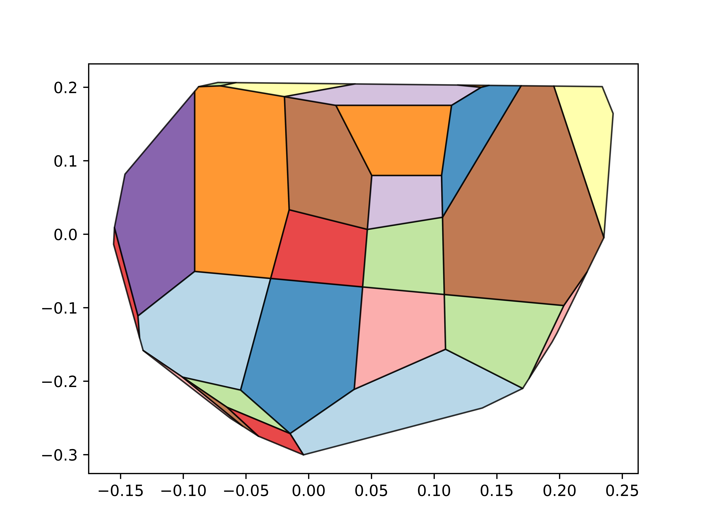

I am Dustin Kenefake, a Post Doc for in the ProOptiMA Group. Formerly, a PhD student in the Pistikopoulos Group, where I focus mainly on algorithms and software for automatic desision making. In undergrad I worked in the [Krempner Group researching novel catalytic systems. In my off time, I like to cook and make beer. Most of the content of this website is in the blog section. The blog coverse a wide array of topics, including implmenting algorithms, data driven methods, optimization and much more.
Here is a simple plot that describes the solution to a multiparametric quadratic programming problem w.r.t. the uncertainty parameters. A quick dive on this subject can be found here
For more information about Multiparametric programming and it's applications this paper is a good jumping point.
All code posted on this site should be considered under an MIT License unless otherwise stated